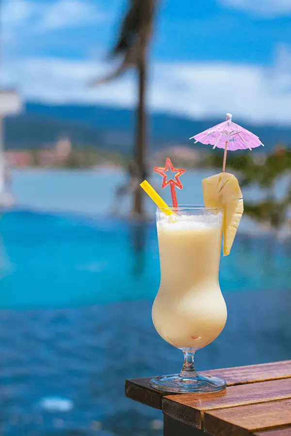
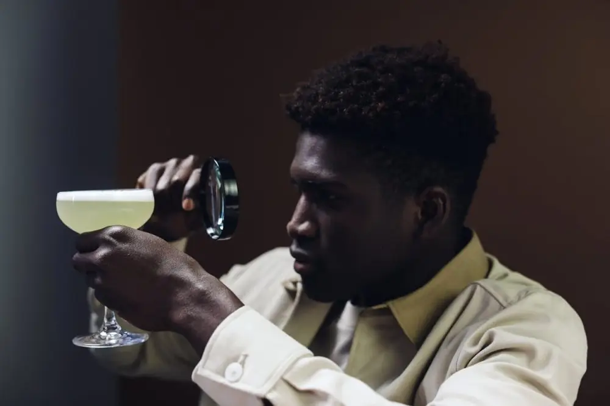
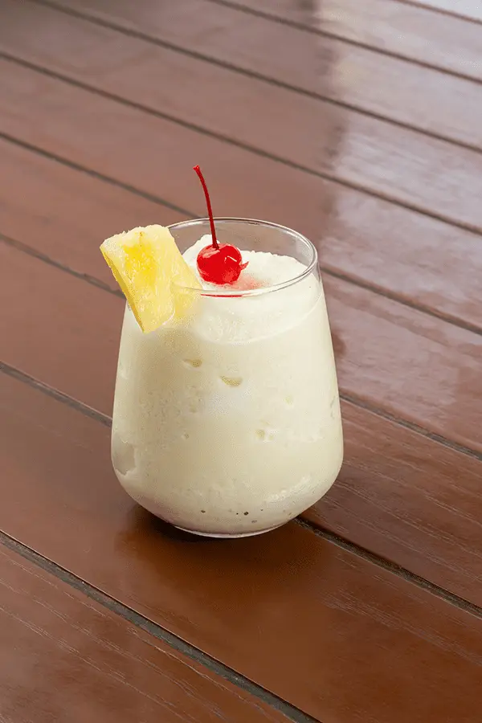

文章 / 飲品配方與資訊
Enjoy the tropical vibes with pina colada boba tea!
這篇是英文原文，尚未完成繁體中文翻譯。中文選單與相關商品連結不會切回英文介面。

查看英文原文（尚未翻譯）
Although it’s technically autumn by now, but the sweltering heat certainly says otherwise! Want to cool yourself down while keeping the tropical vibes going? Why not try pina colada boba tea?

What is Pina Colada?
As its name suggested, Pina Colada is a cocktail made with pineapple juice, often mixed with rum, coconut cream and shaken with ice.
Bartenders often garnish it with a wedge of pineapple, Maraschino cherry, and maybe the odd paper umbrella for that extra summerly feel!
The tart pineapple juice is mellowed out by the rich coconut cream, creating a sweet creamy nectar with just the right amount of sour to tingle your tastebuds.
Meanwhile, the rum lends a spicy, fruity edge to the drink, transforming a simple pineapple slush into a full-on cha-cha-cha-ing party!
Who invented it?
This refreshing cocktail originated from Puerto Rico, but exactly when and who invented it is kind of a debate:
Is it old?
Legends say it was invented by pirate Roberto Cofresí back in the 19th century, as a way to keep up his crew’s spirits (pun intended).
The drink was said to include pineapple, white rum and coconut.
However the original recipe was apparently lost in the seas of time when he died in 1825.
Is it modern?
Others say it’s actually a more modern invention. Travel magazines in the 20s already mentioned Pina Colada, although that version involved pineapple juice mixed with rum, lime and ice instead.
Meanwhile, several (!) hotels and restaurants claimed they invented the Pina Colada as we know it.
For the Caribe Hilton Hotel alone, both Ramón “Monchito” Marrero and Ricardo García said they came up with the idea separately in the 50s.
Barrachina says otherwise, claiming that *their* bartender created it instead.
Regardless of its origins, one thing’s for sure: People love this drink! Not only in its home country, but all over the world. In fact, the USA even has its own Pina Colada day – July 10th!
What if I can’t drink?
You’re in luck: With our non-alcoholic rum syrup, you too can enjoy a refreshing cocktail without worrying about hangovers!
This syrup perfectly captures the same sweet, spicy notes from actual rum, but with none of that pesky alcohol in the way.
Can’t handle your liquor? We’ve got you covered, pick up that shaker and let’s party!


Pina Colada Boba Tea
Bubble tea, meet Pina Colada! Add a playful chew to this classic cocktail, now alcohol-free for the teetootalers.
Perfect for sipping under the summer sun!
What you’ll need
How to make:
In a shaker, add the coconut cream, syrup and pineapple juice
Add ice cubes, then shake until smooth (you can use a blender instead if you prefer)
Add the coconut jelly into a cocktail glass, then pour in the mixture. Garnish with a pineapple wedge and/or Maraschino cherry. Enjoy!
Want a bit of extra crunch? Replace the coconut jelly with crystal boba, or pineapple-flavour popping boba!
Give it a try!
Want to get the party started?
Pick up the ingredients with us, drop us a message and let us know what you need!